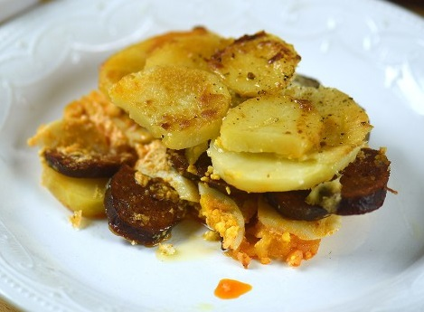

Rakott Krumpli
A rakott krumplit rengetegen szeretjük, de azért sokan
ódzkodunk attól, hogy otthon elkészítsük. Pedig ebből a receptből is
kiderül, hogy rettentően egyszerűen elkészíthető annak ellenére,
hogy kicsit időigényes művelet.

Hozzávaló:
Mennyiség:
burgonya
4 db
főtt tojás
5 db
kolbász
25 dkg
tejföl
660 g
sertészsír
2 ek
só
ízlés szerint
Elkészítés
Főzzük meg héjában a krumplit és a tojásokat is. Mindkét
alapanyag ha megfőtt, pucoljuk meg, és vágjuk őket szeletekre.
Míg a krumpli és tojás fő, addig vágjuk fel a kolbászt is
karikákra.
A zsírt olvasszuk meg, keverjük bele a tejfölt, és picit
sózzuk meg, majd egy nagy tepsi alját ezzel kenjük ki. Karikázzuk
fel a tojásokat és a krumplit.
Első rétegnek a burgonya jöjjön, amit ha lepakoltunk,
locsoljunk meg a zsíros tejföllel. Erre jöhet a tojás, amit
ugyancsak zárásként locsoljunk meg. Majd a kolbászokat is rakjuk le
egy rétegben, és zárásként a maradék burgonyát.
A maradék tejföllel locsoljuk meg az egészet, nem baj, ha
kicsit "tocsog" a tejfölben a rakott krumpli, másnap annál jobb
lesz.
A tepsit tegyük 200 fokra előmelegített sütőbe, és 1 órán
át süssük a krumplit. Ha kész, vegyük ki, egy picit pihentessük,
aztán már fogyaszthatjuk is!
Cím kiírása